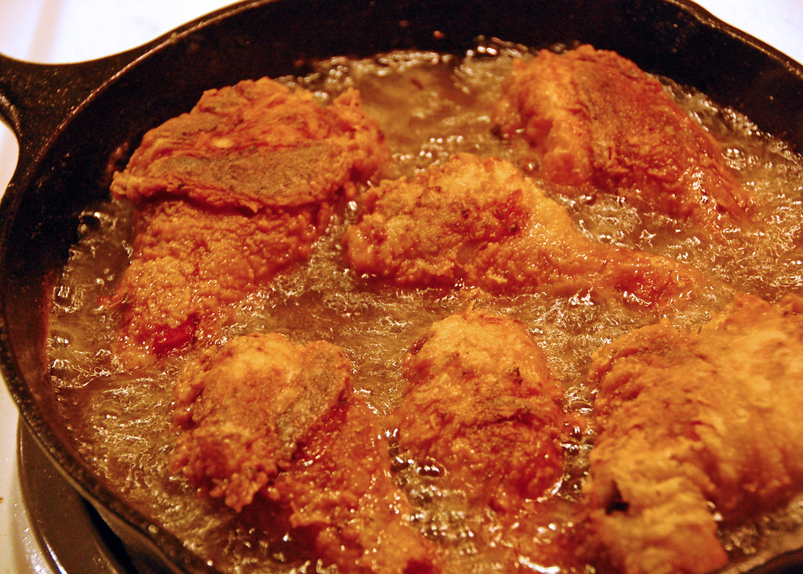

Fried Chicken

Description
This is a wonderful old-timey fried chicken cutlet recipe from the
Deep South. It was handed down from my Great Great Great Grandpappy
("Ole' Reliable") to my Great Great Grandpappy ("Slightly Less Relibale")
to my Great Grandpappy ("Yet even Un-Reliabler") to my Grandpappy ("All
Reliability Now Gone") to my Pappy ("Frank") to me!
Now I am sharing with you the best main course you will ever make for
Sunday dinner after church (though I never did, I'm an vegan atheist you see)
and it will keep all your church-going friends (I also have none of These
as I am a vegan atheist) happy long after they've gone off to meet Ole' St.
Peter at the Pearly Gates (though I don't believe they'll really be there because
I'm a vegan atheist).
Ingredients
- 2lbs Boneless Skinless Chicken Breast
- 1 Qt Panko
- 4 Eggs
- 1 Pint All-Purpose Flour
- Your favorite Salt, Pepper, Garlic Seasoning to taste
- Onion Powder to taste
- Basil to taste
- 1 Pt Extra Virgin Olive Oil
Preparation Steps
- Slice chicken breasts in half width-wise (knife parallel with counter)
- Create 3 mixing bowls: 1. Flour 2. Cracked Eggs 3. Panko
- Place Salt, Pepper, Garlic in Flour to taste
- Place Onion Powder in cracked eggs to taste
- Place basil in panko to taste
- Pour all olive oil into cast iron skillet and heat on medium heat (5 on most dials)
- Cover chicken in flour mix, shake off excess
- Cover chicken in egg wash, shake off excess
- Cover chicken in panko, shake off excess
- Place chicken in oiled pan, let cook 3 minutes
- Flip chicken and let cook 3 minutes.
- Remove chicken to paper towle over plate and drain
- Let rest 3-5 minutes then serve